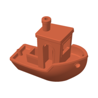
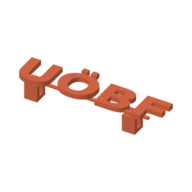

For the costume party. Try the Benchy first to check the new nozzle.
Glasses_Steampunk_Ontaeder.stlSlicing · 42 %
Saved. It keeps slicing while you look around. 
3D3DBenchy.stlest. 38 min · 11.3 g · 11 MBSliced by Spaghetti · 0.20 mm · PLA
⤓
3DUOBF_text_with_clips_V4_TEST.stlest. 19 min · 4 g · 209 KBSliced by Spaghetti · 0.20 mm · PLA⚠ Parts of it float in the air. Slice with supports
⤓STLcanoe-full-size.stlToo big for the plate: 312 mm long, the X2D takes 256.Try againThe file is kept.
⤓
Sliced by Spaghetti
In this browser, with OrcaSlicer 2.5's own slicing
- Printer
- Bambu Lab X2D, 0.4 mm nozzle
- Process
- 0.20 mm Standard
- Filament
- Bambu PLA Basic
- Plate
- Textured PEI
- Supports
- Off
Download the originalSlice again
The slicer is OrcaSlicer's engine, free software under the AGPL. Its source